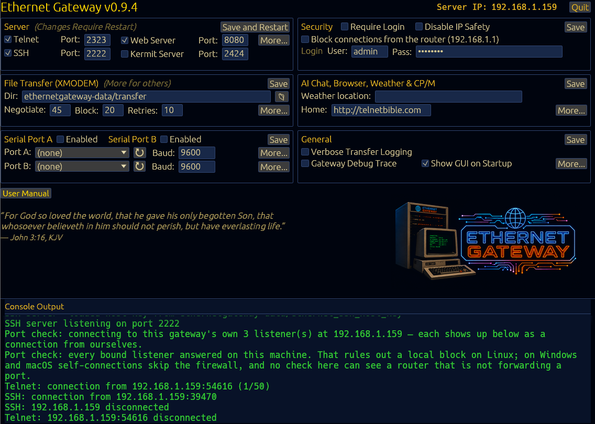

Ethernet Gateway
Bridging vintage hardware to modern networks
Version 0.9.4 — pre-built, signed binaries. Every archive also carries the README, the licence and both CP/M terminals.
Linux
- x86-64 — tar.gz
- ARM64 (Raspberry Pi 4+) — tar.gz
- AppImage, x86-64 — download, allow to execute, and run
- AppImage, ARM64 — the same, for a Raspberry Pi
- A downloaded AppImage is not executable yet. Give it the bit with
chmod +x, or tick Allow executing file as program in your file manager's properties, then run it.
macOS
- Apple Silicon — tar.gz
- Unsigned by Apple, so the first launch is right-click → Open, or clear the quarantine flag with
xattr -d com.apple.quarantine.
Windows
- x86-64 — zip
- Unpack anywhere and run
ethernetgateway.exe; it creates its data folder beside itself on first launch.
Every file is published with a SHA-256 sum and a keyless
Sigstore signature
(.sha256, .sig, .pem) so a download can be
verified. Older versions, the checksums and the full release notes are on the
releases page;
the source is on GitHub
and builds with cargo build --release on rustc 1.92 or newer.
New here? The user manual (PDF) walks through the first launch, the terminal types and every setting.
Ethernet Gateway is a lightweight bridge that connects serial devices and legacy systems to modern TCP/IP networks.
It is a standalone, retro-themed server written in Rust. It offers telnet
and SSH access to a full-featured gateway with XMODEM, XMODEM-1K, YMODEM,
ZMODEM, Kermit and Punter file transfer, SSH and telnet proxying, a CP/M
emulator that runs real .COM software and boots real disk
images, an AI chat client, a text-mode web browser, weather reports, and
Hayes-compatible modem emulation on two physically independent
serial ports — each of which also flips to a telnet-serial
console bridge or an always-on Kermit server on demand.
Designed to work with hardware as old as the Commodore 64 and CP/M machines while remaining fully functional on modern ANSI terminals, Ethernet Gateway adapts its display automatically to the capabilities of each connected client — PETSCII at 40 columns, ANSI in colour, or plain ASCII.
Connect & Bridge
- Telnet and encrypted SSH access, plus SSH/telnet proxying to remote servers
- Two independent serial ports — each a Hayes AT modem, a console bridge, or a Kermit server
ATDTTCP dial-out with a phone book, and peer-to-peer dialling between two devices- Auto-adapts to PETSCII, ANSI and ASCII terminals
Transfer & Run
- XMODEM / XMODEM-1K / YMODEM / ZMODEM / Kermit / Punter C1
- Gateway Shell — a CP/M-inspired
A>file manager over the transfer directory - CP/M emulator — real CP/M 2.2 software on an emulated Z80 or 8080, plus mounting and booting
.dskimages - CP/M printer — capture
LST:output as OpenDocument or text
Scale & Manage
- Master/Slave mode — a slave extends its serial ports to a master over SSH
- Configure from the terminal, a browser, or the desktop console with live logs
- Optional authentication with per-IP lockout; Ed25519 SSH host key
- Runs on Linux, macOS and Windows, down to a Raspberry Pi

The desktop console — every setting is also reachable over telnet and from a browser.
The manual, and the companion documents that go deeper than it does.
User Manual (PDF)
The whole gateway end to end: setup, terminal types, the menus, file transfer, the gateways, the modem, the config file and troubleshooting. Kept in the repository and rebuilt with every release.
CP/M Emulator Reference
The emulated Z80/8080 machine, the BDOS and BIOS services, mounting disk images, booting one, the virtual modem and the printer.
Disk Format Reference
The measured geometry of every supported .dsk format, the Altair 88-DCDD controller, sector skew and the two sector checksums.
XMODEM Protocol Reference
CRC-16 versus the older checksum, 128-byte and 1024-byte framing, block anatomy, error handling and the timeout tunables.
YMODEM Protocol Reference
What YMODEM adds over XMODEM-1K: the block-0 header, batch transfers, the end-of-batch null block and exact size-based truncation.
ZMODEM Protocol Reference
The ZDLE escape layer, hex and binary headers, CRC-16 and CRC-32, batch send and receive, resume, and the rz auto-start trigger.
Kermit Transfer Reference
Using Kermit through the gateway: client and server modes, the serial Kermit port, and what to set on the vintage end.
Kermit Protocol Reference
The protocol itself: packet types, sliding windows, long and extended packets, block-check types and 8-bit quoting.
Punter C1 Protocol Reference
The protocol Commodore terminals speak natively: dual checksums, the two-phase block transfer and the CCGMS/Novaterm handshake.
AT Command Reference
Every Hayes command the modem emulator answers, the S-registers, the result codes and the dial-out forms.
Telnet Negotiation Reference
The IAC option negotiation the gateway performs, which options it accepts, and how binary transfers survive it.
SSH Reference
The inbound SSH server and the outbound SSH gateway: host keys, public-key authentication and known-hosts handling.
Character Code Appendices
PETSCII, ASCII and control-code tables, and the ANSI escape sequences the gateway emits and filters.